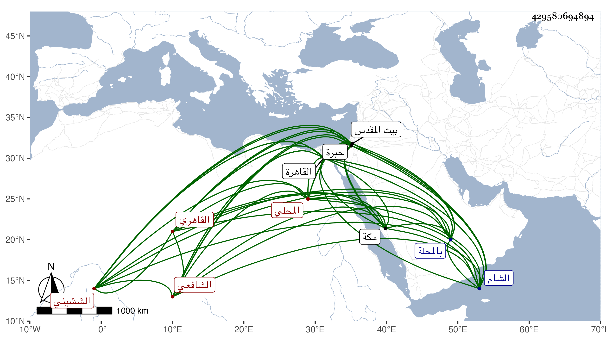

0902Sakhawi.DawLamic.ITO20230111-ara1.EIS1600.429580694894
Biography ID: 429580694894
582
محمود نب محمد بن عمر بن محمد بن وجيه بن مخلوف الصدر بن القطب الششيني المحلي ثم القاهري الشافعي الماضي أبوه ويعرف بابن قطب . ولد في إحدى الجمادين سنة إحدى وتسعين وسبعمائة بالمحلة وانتقل منها وهو ابن شهر مع أمه إلى القاهرة فنشأ بها وحفظ القرآن عند فقيهنا الشمس السعودي ونصف التنبيه وتكسب بالشهادة في حانوت ميدان القمح وغيره وانتمى للولوي بن قاسم نديم الأشرف لكونه كان زوجا لأخت الصدر هذا بل وتزوج الصدر أخت زوجته الثانية وهي ابنة الشمس السمنودي أخي الشيخ عمر الشهير . وآخر ما حج مع الرجبية رفيقا لابنه وسبطه الشهاب الشيشيني الحنبلي الماضي ، وأول حجاته صحبة والده سنة خمس وتكررت مجاورته بينهما وبعضها في ظل ابن قاسم وتكسب أيضا هناك بالشهادة ودخل معه الشام وزار بيت المقدس والخليل ورأى في أيامه عزا وتضعضع حاله في آخر الوقت وصار لقدمه يشهد على الخطوط ولكنه لم يذكر عنه في ذلك إلا الخير سوى أنه لا يؤدي حتى يأخذ دينارا غالبا وكتب بخطه الترغيب وغيره وهو ممن اجتمع بقريبه النور الهوريني وبفخر الدين عثمان الشيشيني عم والده ولا أستبعد سماعه من أولهما بل هو محتمل في الثاني أيضا وكثرت مجالستي معه بمكة والقاهرة واستفدت منه فوائد نثرية في تراجم جماعة ممن رآهم وخالطهم ولم يكن بعيدا عن الضبط بل كتبت عنده ما أنشده إياه الصدر سليمان الأبشيطي حين جلوسه قاضيا بمجلس الميدان لنفسه ما نظمه في سقوط الفيل مرزوق بالقنطرة بالبحمون قريبا من قنطرة الفخر حسبما أوردته في المعجم . ولم يزل على فاقته حتى مات بعد تعلله أشهرا في ليلة الأربعاء تاسع ربيع الأول سنة ثمان وسبعين وصلي عليه من الغد ودفن عند أبيه وأخيه في لحدهما من حوش البيبرسية رحمه الله .
